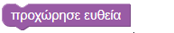
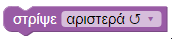
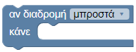
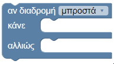
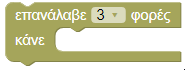
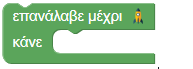
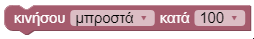
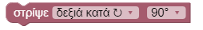
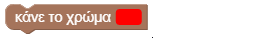

Πληροφορίες
Το aMazeD είναι ένα εκπαιδευτικό παιχνίδι που δημιουργήθηκε με τη χρήση της βιβλιοθήκης Blockly και την επέκταση της λειτουργικότητας των παιχνιδιών Blockly Games.
Ο κώδικας του παιχνιδιού είναι διαθέσιμος στο GitHub .
Λειτουργικότητα παιχνιδιού
Το παιχνίδι αποτελείται από 10 επίπεδα τα οποία χωρίζονται σε δυο κατηγορίες.
- Τα επίπεδα 1-6 συνθέτουν την πρώτη κατηγορία του παιχνιδιού που είναι ένας Λαβύρινθος. Ο παίκτης με την κατάλληλη επιλογή block πρέπει να δημιουργήσει ένα πρόγραμμα για να φτάσει ο χαρακτήρας στο τέλος του λαβυρίνθου.
- Τα επίπεδα 7-10 συνθέτουν την δεύτερη κατηγορία του παιχνιδιού που είναι η Ζωγραφική. Ο παίκτης πρέπει με την κατάλληλη επιλογή block να δημιουργήσει ένα πρόγραμμα που θα σχεδιάσει το ζητούμενο σχήμα.
Για τον έλεγχο και του κώδικα και την υποβολή απάντησης ο χρήστης έχει στην διάθεσή του τα ακόλουθα κουμπιά:

Κουμπί "Παίξε"
Πατώντας το "Παίξε" μπορείτε να δείτε την την κίνηση του παίκτη ανάλογα με τον κώδικά σας. Όταν εκτελεστούν οι εντολές από τα blocks που έχετε στοιβάξει θα πρέπει να πατήσετε επαναφορά για να επιστρέψει ο παίκτης σας στην εκκίνηση.
Κουμπί "Επαναφορά"
Πατώντας "Επαναφορά" δεν εκτελείται ο κώδικας των blocks και επιστρέφει ο παίκτης σας στην εκκίνηση.
Κουμπί "Υποβολή"
Με την "Υποβολή" υποβάλλετε την απάντησή σας είτε είναι σωστή είτε λανθασμένη. Πρέπει να πατήσετε "Υποβολή" για να περάσετε στο επόμενο επίπέδο.
Blocks
-

Προχώρησε ευθεία
Ο παίκτης προχωρά ευθεία για ένα βήμα.
-

Στρίψε αριστερά/δεξιά
Ο παίκτης στρίβει επί τόπου αριστερά ή δεξιά ανάλογα με την επιλογή του χρήστη.
-

Αν υπάρχει διαδρομή μπροστά/αριστερά/δεξιά
Αν υπάρχει διαδρομή στην κατεύθυνση που επιλέγει ο χρήστης εκτελείται το block που βρίσκεται μέσα στο "κάνε". Για παράδειγμα αν μπει το block "προχώρησε μπροστά" ο παίκτης θα προχωρήσει ένα βήμα μπροστά όταν υπάρχει διαδρομή (μπροστά/αριστερά/δεξιά) ανάλογα με την επιλογή.
-

Αν υπάρχει διαδρομή μπροστά/αριστερά/δεξιά ..(συνθήκη)..αλλιώς..(εναλλακτική συνθήκη)
Αν υπάρχει διαδρομή προς την κατεύθυνση που επιλέγει ο χρήστης εκτελείται το block στο "κάνε". Αν δεν υπάρχει διαδρομή προς αυτή την κατεύθυνση εκτελείται το block στο "αλλιώς".
-

Επανέλαβε ν-φορές
Επαναλαμβάνεται το block μέσα στο "κάνε" όσες φορές επιλέγει ο χρήστης.
-

Επανέλαβε μέχρι...τέρμα
Επαναλαμβάνεται το block στο "κάνε" μέχρι να φτάσει ο παίκτης στο τέρμα.
-

Κινήσου μπροστά κ-pixel
Το πινέλο κινείται μπροστά κατά το ορισμένο ποσό (οι μονάδες μέτρησης είναι σε pixel).
-

Στρίψε δεξιά/αριστερά κατά μ-μοίρες
Το πινέλο στρίβει δεξιά/αριστερά ανάλογα με την επιλογή του χρήστη τόσες μοίρες όσες επιλέγει ο χρήστης από το δεύτερο πτυσσόμενο μενού επιλογής.
-

Κάνε το χρώμα...
Αλλάζει το χρώμα του πινέλου ανάλογα με την επιλογή του χρήστη.
Αποτελέσματα
Με την ολοκλήρωση του παιχνιδιού εμφανίζεται η σελίδα των αποτελεσμάτων με τα δεδομένα ανά επίπεδο και την συνολική βαθμολογία του παιχνιδιού. Για να εμφανιστούν τα αποτελέσματα είναι απαραίτητο να εισάγετε ένα όνομα και μια έγκυρη διεύθυνση e-mail.